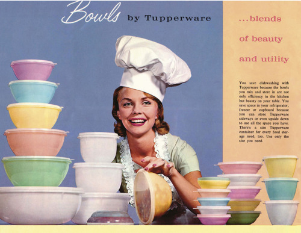

홈 > 브랜드 매거진 > 타파웨어
타파웨어
터퍼웨어(Tupperware)는 발명가 얼 터퍼가 폴리에틸렌 밀폐용기를 개발해 1946년 선보인 미국의 가정용 식품 보관용기 브랜드다. 가정 방문 시연 방식의 '터퍼웨어 파티' 직접판매 모델로 성장했다.
산업 분야 홈·라이프스타일 · 공개 등급 자료 기반 · 브랜드 평가 4.3 ★

한눈에 보는 브랜드
터퍼웨어(Tupperware)는 미국의 가정용 밀폐 식품 보관용기 브랜드로, 발명가 얼 터퍼(Earl Tupper)가 폴리에틸렌 용기를 개발해 1946년 시장에 선보였다. 핵심 혁신은 페인트 통에서 착안한 밀폐 '버핑(burping) 실'로, 공기를 빼내 음식을 더 오래 신선하게 보관할 수 있게 했다.
초기 소매 판매가 부진하자 브라우니 와이즈(Brownie Wise)가 고안한 가정 방문 시연 방식의 '터퍼웨어 파티' 직접판매 모델을 도입해 1951년부터 폭발적으로 성장했다.
시작과 성장
타파웨어는 1946년 얼 사일러스 타파가 만든 미국의 주방용품 브랜드로, 물과 공기를 차단시키는 완전한 밀폐력을 지닌 씰(Seal, 뚜껑)을 개발하여 혁신적인 밀폐용기를 선보이며 시작되었다. 브라우니 와이즈의 홈파티 판매 전략을 통해 크게 성장한 타파웨어는 현재 약 100개국에서 사랑받고 있다.
브랜드 아이덴티티
터퍼웨어 제품은 불필요한 장식을 배제한 깔끔한 선과 곡면의 모더니즘 디자인, 파스텔 색조의 플라스틱 용기로 대표되며, 얼 터퍼의 폴리에틸렌 용기·텀블러 등은 뉴욕 현대미술관(MoMA) 영구 소장품에 포함되어 있다. 2024년에는 에이전시 랜도(Landor)가 주도한 리브랜딩이 진행되어, 뚜껑이 뒤로 벗겨지는 순간을 형상화한 스타일라이즈드 대문자 'T' 워드마크와 'Utility is beautiful' 슬로건, 용기 뚜껑의 물결(스캘럽) 형태를 활용한 'The Original Since 1946' 콜아웃을 도입했다.
구체적인 컬러 값과 서체명은 공개 자료로 확인되지 않는다.
제품과 서비스
대표 제품과 서비스 정보는 편집 검수 후 공개됩니다.
현재 상태
터퍼웨어 브랜즈는 2024년 9월 미국 델라웨어 연방법원에 챕터 11(파산보호)을 신청했고, 같은 해 11월 법원이 채권단으로의 자산 매각을 승인했다. 이후 브랜드는 'The New Tupperware Co.'로서 한국을 포함한 핵심 시장에서 사업을 이어가고 있다.